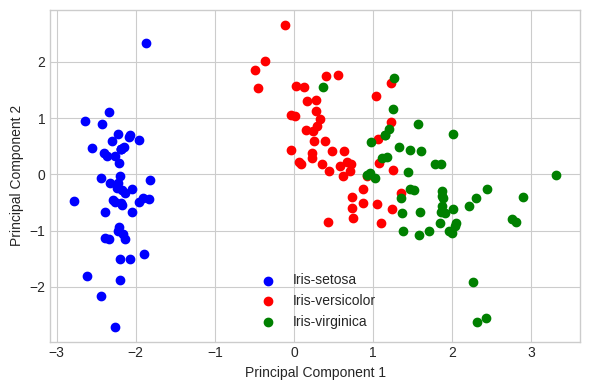

DT_PCA#
import pandas as pd
import numpy as np
import seaborn as sns
import matplotlib.pyplot as plt
df=pd.read_csv('https://raw.githubusercontent.com/whintaaa/iris/main/iris.csv')
df.head()
| sepal_l | sepal_w | petal_l | petal_w | class | |
|---|---|---|---|---|---|
| 0 | 5.1 | 3.5 | 1.4 | 0.2 | Iris-setosa |
| 1 | 4.9 | 3.0 | 1.4 | 0.2 | Iris-setosa |
| 2 | 4.7 | 3.2 | 1.3 | 0.2 | Iris-setosa |
| 3 | 4.6 | 3.1 | 1.5 | 0.2 | Iris-setosa |
| 4 | 5.0 | 3.6 | 1.4 | 0.2 | Iris-setosa |
df['class'].value_counts()
Iris-setosa 50
Iris-versicolor 50
Iris-virginica 50
Setosa 50
Versicolor 50
Virginica 50
Name: class, dtype: int64
df.columns
Index(['sepal_l', 'sepal_w', 'petal_l', 'petal_w', 'class'], dtype='object')
X=df.iloc[:,0:4].values
y=df.iloc[:,4].values
label_dict={1: 'Iris-setosa',
2: 'Iris-virginica',
3: 'Iris-versicolor'}
feature_dict={0: 'sepal_length',1: 'sepal_width',2: 'petal_length',3: 'petal_width'}
with plt.style.context('seaborn-whitegrid'):
plt.figure(figsize=(8,6))
for i in range(4):
plt.subplot(2,2,i+1)
for lab in ('Iris-setosa','Iris-virginica','Iris-versicolor'):
plt.hist(X[y==lab, i],
label=lab,
bins=10,
alpha=0.3)
plt.xlabel(feature_dict[i])
plt.legend(loc='upper right', fancybox=True,fontsize=8)
plt.tight_layout()
plt.show()

from sklearn.preprocessing import StandardScaler
X_std=StandardScaler().fit_transform(X)
mean_vec=np.mean(X_std,axis=0)
cov_mat=(X_std-mean_vec).T.dot((X_std-mean_vec))/(X_std.shape[0]-1)
print("Covariance Matrix \n%s" %cov_mat)
Covariance Matrix
[[ 1.00334448 -0.11385853 0.87466949 0.82068276]
[-0.11385853 1.00334448 -0.42590552 -0.36254685]
[ 0.87466949 -0.42590552 1.00334448 0.9660308 ]
[ 0.82068276 -0.36254685 0.9660308 1.00334448]]
print("Numpy Covariance matrix \n%s" %np.cov(X_std.T))
Numpy Covariance matrix
[[ 1.00334448 -0.11385853 0.87466949 0.82068276]
[-0.11385853 1.00334448 -0.42590552 -0.36254685]
[ 0.87466949 -0.42590552 1.00334448 0.9660308 ]
[ 0.82068276 -0.36254685 0.9660308 1.00334448]]
cov_mat=np.cov(X_std.T)
eig_vals, eig_vecs=np.linalg.eig(cov_mat)
print("Eigenvectors \n%s" %eig_vecs)
print("Eigenvelues \n%s" %eig_vals)
Eigenvectors
[[ 0.52171778 -0.37486813 -0.72029777 0.26164013]
[-0.26636854 -0.9244304 0.24319552 -0.12382316]
[ 0.58083504 -0.02280557 0.14150831 -0.80130267]
[ 0.56523359 -0.06619834 0.63403664 0.52357072]]
Eigenvelues
[2.92439167 0.92070445 0.14755111 0.02073069]
corr_mat1=np.corrcoef(X_std.T)
eig_vals, eig_vecs=np.linalg.eig(corr_mat1)
print("Eigenvectors \n%s" %eig_vecs)
print("Eigenvelues \n%s" %eig_vals)
Eigenvectors
[[ 0.52171778 -0.37486813 -0.72029777 0.26164013]
[-0.26636854 -0.9244304 0.24319552 -0.12382316]
[ 0.58083504 -0.02280557 0.14150831 -0.80130267]
[ 0.56523359 -0.06619834 0.63403664 0.52357072]]
Eigenvelues
[2.9146437 0.91763544 0.14705928 0.02066158]
cor_mat2=np.corrcoef(X.T)
eig_vals, eig_vecs=np.linalg.eig(cor_mat2)
print("Eigenvectors \n%s" %eig_vecs)
print("Eigenvelues \n%s" %eig_vals)
Eigenvectors
[[ 0.52171778 -0.37486813 -0.72029777 0.26164013]
[-0.26636854 -0.9244304 0.24319552 -0.12382316]
[ 0.58083504 -0.02280557 0.14150831 -0.80130267]
[ 0.56523359 -0.06619834 0.63403664 0.52357072]]
Eigenvelues
[2.9146437 0.91763544 0.14705928 0.02066158]
u, s, v=np.linalg.svd(X_std.T)
u
array([[-0.52171778, -0.37486813, 0.72029777, 0.26164013],
[ 0.26636854, -0.9244304 , -0.24319552, -0.12382316],
[-0.58083504, -0.02280557, -0.14150831, -0.80130267],
[-0.56523359, -0.06619834, -0.63403664, 0.52357072]])
for ev in eig_vecs.T:
np.testing.assert_array_almost_equal(1.0, np.linalg.norm(ev))
print("Everithing is ok")
Everithing is ok
# Make a list of (eigenvalue, eigenvector) tuples
eig_pairs = [(np.abs(eig_vals[i]), eig_vecs[:,i]) for i in range(len(eig_vals))]
# Sort the (eigenvalue, eigenvector) tuples from high to low
eig_pairs.sort(key=lambda x: x[0], reverse=True)
# Visually confirm that the list is correctly sorted by decreasing eigenvalues
print('Eigenvalues in descending order:')
for i in eig_pairs:
print(i[0])
Eigenvalues in descending order:
2.914643702203565
0.9176354378175842
0.14705927550261844
0.020661584476230434
tot = sum(eig_vals)
var_exp = [(i / tot)*100 for i in sorted(eig_vals, reverse=True)]
cum_var_exp = np.cumsum(var_exp)
with plt.style.context('seaborn-whitegrid'):
plt.figure(figsize=(6, 4))
plt.bar(range(4), var_exp, alpha=0.5, align='center',
label='individual explained variance')
plt.step(range(4), cum_var_exp, where='mid',
label='cumulative explained variance')
plt.ylabel('Explained variance ratio')
plt.xlabel('Principal components')
plt.legend(loc='best')
plt.tight_layout()

matrix_w = np.hstack((eig_pairs[0][1].reshape(4,1),
eig_pairs[1][1].reshape(4,1)))
print('Matrix W:\n', matrix_w)
Matrix W:
[[ 0.52171778 -0.37486813]
[-0.26636854 -0.9244304 ]
[ 0.58083504 -0.02280557]
[ 0.56523359 -0.06619834]]
Y = X_std.dot(matrix_w)
with plt.style.context('seaborn-whitegrid'):
plt.figure(figsize=(6, 4))
for lab, col in zip(('Iris-setosa', 'Iris-versicolor', 'Iris-virginica'),
('blue', 'red', 'green')):
plt.scatter(Y[y==lab, 0],
Y[y==lab, 1],
label=lab,
c=col)
plt.xlabel('Principal Component 1')
plt.ylabel('Principal Component 2')
plt.legend(loc='lower center')
plt.tight_layout()
plt.show()

from sklearn.decomposition import PCA as sklearnPCA
sklearn_pca = sklearnPCA(n_components=2)
Y_sklearn = sklearn_pca.fit_transform(X_std)
with plt.style.context('seaborn-whitegrid'):
plt.figure(figsize=(6, 4))
for lab, col in zip(('Iris-setosa', 'Iris-versicolor', 'Iris-virginica'),
('blue', 'red', 'green')):
plt.scatter(Y[y==lab, 0],
Y[y==lab, 1],
label=lab,
c=col)
plt.xlabel('Principal Component 1')
plt.ylabel('Principal Component 2')
plt.legend(loc='lower center')
plt.tight_layout()
plt.show()
data=pd.DataFrame(Y_sklearn)
data.columns=['PC1','PC2']
data
| PC1 | PC2 | |
|---|---|---|
| 0 | -2.264652 | 0.492794 |
| 1 | -2.083700 | -0.664823 |
| 2 | -2.366105 | -0.330254 |
| 3 | -2.301801 | -0.586438 |
| 4 | -2.389345 | 0.660727 |
| ... | ... | ... |
| 295 | 1.870506 | 0.384920 |
| 296 | 1.561554 | -0.900968 |
| 297 | 1.521002 | 0.267951 |
| 298 | 1.374565 | 1.013822 |
| 299 | 0.959972 | -0.023295 |
300 rows 2 columns
data['class']=df['class']
data
| PC1 | PC2 | class | |
|---|---|---|---|
| 0 | -2.264652 | 0.492794 | Iris-setosa |
| 1 | -2.083700 | -0.664823 | Iris-setosa |
| 2 | -2.366105 | -0.330254 | Iris-setosa |
| 3 | -2.301801 | -0.586438 | Iris-setosa |
| 4 | -2.389345 | 0.660727 | Iris-setosa |
| ... | ... | ... | ... |
| 295 | 1.870506 | 0.384920 | Virginica |
| 296 | 1.561554 | -0.900968 | Virginica |
| 297 | 1.521002 | 0.267951 | Virginica |
| 298 | 1.374565 | 1.013822 | Virginica |
| 299 | 0.959972 | -0.023295 | Virginica |
300 rows 3 columns
df = data
df
| PC1 | PC2 | class | |
|---|---|---|---|
| 0 | -2.264652 | 0.492794 | Iris-setosa |
| 1 | -2.083700 | -0.664823 | Iris-setosa |
| 2 | -2.366105 | -0.330254 | Iris-setosa |
| 3 | -2.301801 | -0.586438 | Iris-setosa |
| 4 | -2.389345 | 0.660727 | Iris-setosa |
| ... | ... | ... | ... |
| 295 | 1.870506 | 0.384920 | Virginica |
| 296 | 1.561554 | -0.900968 | Virginica |
| 297 | 1.521002 | 0.267951 | Virginica |
| 298 | 1.374565 | 1.013822 | Virginica |
| 299 | 0.959972 | -0.023295 | Virginica |
300 rows 3 columns
df['class'].value_counts()
Iris-setosa 50
Iris-versicolor 50
Iris-virginica 50
Setosa 50
Versicolor 50
Virginica 50
Name: class, dtype: int64
df.isnull().sum()
PC1 0
PC2 0
class 0
dtype: int64
X = df.drop(['class'], axis=1)
y = df['class']
from sklearn.model_selection import train_test_split
X_train, X_test, y_train, y_test = train_test_split(X, y, test_size = 0.33, random_state = 21)
X_train.shape, X_test.shape
((201, 2), (99, 2))
X_train.dtypes
PC1 float64
PC2 float64
dtype: object
!pip install category_encoders
import category_encoders as ce
Looking in indexes: https://pypi.org/simple, https://us-python.pkg.dev/colab-wheels/public/simple/
Collecting category_encoders
Downloading category_encoders-2.6.1-py2.py3-none-any.whl (81 kB)
?25l 0.0/81.9 kB ? eta -:--:--
81.9/81.9 kB 3.9 MB/s eta 0:00:00
?25hRequirement already satisfied: numpy>=1.14.0 in /usr/local/lib/python3.10/dist-packages (from category_encoders) (1.22.4)
Requirement already satisfied: scikit-learn>=0.20.0 in /usr/local/lib/python3.10/dist-packages (from category_encoders) (1.2.2)
Requirement already satisfied: scipy>=1.0.0 in /usr/local/lib/python3.10/dist-packages (from category_encoders) (1.10.1)
Requirement already satisfied: statsmodels>=0.9.0 in /usr/local/lib/python3.10/dist-packages (from category_encoders) (0.13.5)
Requirement already satisfied: pandas>=1.0.5 in /usr/local/lib/python3.10/dist-packages (from category_encoders) (1.5.3)
Requirement already satisfied: patsy>=0.5.1 in /usr/local/lib/python3.10/dist-packages (from category_encoders) (0.5.3)
Requirement already satisfied: python-dateutil>=2.8.1 in /usr/local/lib/python3.10/dist-packages (from pandas>=1.0.5->category_encoders) (2.8.2)
Requirement already satisfied: pytz>=2020.1 in /usr/local/lib/python3.10/dist-packages (from pandas>=1.0.5->category_encoders) (2022.7.1)
Requirement already satisfied: six in /usr/local/lib/python3.10/dist-packages (from patsy>=0.5.1->category_encoders) (1.16.0)
Requirement already satisfied: joblib>=1.1.1 in /usr/local/lib/python3.10/dist-packages (from scikit-learn>=0.20.0->category_encoders) (1.2.0)
Requirement already satisfied: threadpoolctl>=2.0.0 in /usr/local/lib/python3.10/dist-packages (from scikit-learn>=0.20.0->category_encoders) (3.1.0)
Requirement already satisfied: packaging>=21.3 in /usr/local/lib/python3.10/dist-packages (from statsmodels>=0.9.0->category_encoders) (23.1)
Installing collected packages: category_encoders
Successfully installed category_encoders-2.6.1
encoder = ce.OrdinalEncoder(cols=["PC1","PC2"])
X_train = encoder.fit_transform(X_train)
X_test = encoder.transform(X_test)
X_train.head()
| PC1 | PC2 | |
|---|---|---|
| 141 | 1 | 1 |
| 142 | 2 | 2 |
| 173 | 3 | 3 |
| 17 | 4 | 4 |
| 269 | 5 | 5 |
X_test.head()
| PC1 | PC2 | |
|---|---|---|
| 61 | 86.0 | 86.0 |
| 219 | 42.0 | 42.0 |
| 55 | 40.0 | 40.0 |
| 244 | 82.0 | 82.0 |
| 95 | 103.0 | 103.0 |
from sklearn.tree import DecisionTreeClassifier
clf_gini = DecisionTreeClassifier(criterion='gini', max_depth=3, random_state=21)
clf_gini.fit(X_train, y_train)
DecisionTreeClassifier(max_depth=3, random_state=21)In a Jupyter environment, please rerun this cell to show the HTML representation or trust the notebook.
On GitHub, the HTML representation is unable to render, please try loading this page with nbviewer.org.
DecisionTreeClassifier(max_depth=3, random_state=21)
y_pred_gini = clf_gini.predict(X_test)
from sklearn.metrics import accuracy_score
print('Model accuracy score with criterion gini index: {0:0.2f}'. format(accuracy_score(y_test, y_pred_gini)))
Model accuracy score with criterion gini index: 0.11
y_pred_train_gini = clf_gini.predict(X_train)
y_pred_train_gini
array(['Iris-virginica', 'Iris-virginica', 'Iris-setosa', 'Iris-setosa',
'Iris-setosa', 'Iris-setosa', 'Iris-setosa', 'Iris-setosa',
'Iris-setosa', 'Iris-setosa', 'Iris-setosa', 'Iris-setosa',
'Iris-setosa', 'Setosa', 'Setosa', 'Setosa', 'Iris-versicolor',
'Iris-versicolor', 'Iris-versicolor', 'Iris-versicolor',
'Iris-versicolor', 'Iris-versicolor', 'Iris-setosa', 'Iris-setosa',
'Iris-setosa', 'Iris-setosa', 'Iris-setosa', 'Iris-setosa',
'Iris-setosa', 'Iris-setosa', 'Iris-setosa', 'Iris-setosa',
'Iris-setosa', 'Iris-setosa', 'Iris-setosa', 'Iris-setosa',
'Iris-setosa', 'Iris-setosa', 'Setosa', 'Iris-setosa',
'Iris-setosa', 'Iris-setosa', 'Iris-setosa', 'Iris-setosa',
'Iris-setosa', 'Iris-setosa', 'Iris-setosa', 'Iris-setosa',
'Iris-setosa', 'Iris-setosa', 'Iris-setosa', 'Iris-setosa',
'Iris-setosa', 'Iris-setosa', 'Iris-setosa', 'Iris-setosa',
'Iris-setosa', 'Iris-virginica', 'Iris-setosa', 'Iris-setosa',
'Iris-setosa', 'Iris-setosa', 'Iris-setosa', 'Iris-setosa',
'Iris-setosa', 'Iris-setosa', 'Iris-versicolor', 'Iris-setosa',
'Iris-setosa', 'Iris-setosa', 'Iris-setosa', 'Iris-setosa',
'Setosa', 'Iris-setosa', 'Iris-setosa', 'Iris-setosa',
'Iris-setosa', 'Iris-setosa', 'Iris-setosa', 'Iris-setosa',
'Iris-setosa', 'Iris-setosa', 'Iris-setosa', 'Iris-setosa',
'Iris-setosa', 'Iris-setosa', 'Iris-setosa', 'Iris-setosa',
'Iris-setosa', 'Iris-setosa', 'Iris-setosa', 'Iris-setosa',
'Iris-setosa', 'Iris-setosa', 'Iris-setosa', 'Iris-setosa',
'Iris-setosa', 'Iris-setosa', 'Iris-setosa', 'Iris-setosa',
'Iris-setosa', 'Iris-setosa', 'Iris-setosa', 'Iris-setosa',
'Iris-setosa', 'Iris-setosa', 'Iris-setosa', 'Iris-setosa',
'Iris-setosa', 'Iris-setosa', 'Iris-setosa', 'Iris-setosa',
'Iris-setosa', 'Iris-versicolor', 'Iris-setosa', 'Iris-setosa',
'Iris-setosa', 'Iris-setosa', 'Iris-setosa', 'Iris-setosa',
'Iris-setosa', 'Iris-setosa', 'Iris-setosa', 'Iris-setosa',
'Iris-setosa', 'Iris-setosa', 'Iris-setosa', 'Iris-setosa',
'Iris-setosa', 'Iris-setosa', 'Iris-setosa', 'Iris-setosa',
'Iris-setosa', 'Iris-setosa', 'Iris-setosa', 'Iris-setosa',
'Iris-setosa', 'Iris-setosa', 'Iris-setosa', 'Iris-setosa',
'Iris-setosa', 'Iris-setosa', 'Iris-setosa', 'Iris-setosa',
'Iris-setosa', 'Iris-setosa', 'Iris-setosa', 'Iris-setosa',
'Iris-setosa', 'Iris-setosa', 'Iris-setosa', 'Iris-setosa',
'Iris-setosa', 'Iris-setosa', 'Iris-setosa', 'Iris-setosa',
'Iris-setosa', 'Iris-setosa', 'Iris-setosa', 'Iris-setosa',
'Iris-setosa', 'Iris-setosa', 'Iris-setosa', 'Iris-setosa',
'Iris-setosa', 'Iris-setosa', 'Iris-setosa', 'Iris-setosa',
'Iris-setosa', 'Iris-setosa', 'Iris-setosa', 'Iris-setosa',
'Iris-setosa', 'Iris-setosa', 'Iris-setosa', 'Iris-setosa',
'Iris-setosa', 'Iris-setosa', 'Iris-setosa', 'Iris-setosa',
'Iris-setosa', 'Iris-setosa', 'Iris-setosa', 'Iris-setosa',
'Iris-setosa', 'Iris-setosa', 'Iris-setosa', 'Iris-setosa',
'Iris-setosa', 'Iris-setosa', 'Iris-versicolor', 'Iris-setosa',
'Iris-setosa', 'Iris-setosa', 'Iris-setosa', 'Iris-setosa',
'Iris-setosa', 'Iris-setosa', 'Iris-setosa', 'Iris-setosa',
'Iris-setosa'], dtype=object)
print('Training-set accuracy score: {0:0.2f}'. format(accuracy_score(y_train, y_pred_train_gini)))
Training-set accuracy score: 0.22
print('Training set score: {:.2f}'.format(clf_gini.score(X_train, y_train)))
print('Test set score: {:.2f}'.format(clf_gini.score(X_test, y_test)))
Training set score: 0.22
Test set score: 0.11
plt.figure(figsize=(10,6))
from sklearn import tree
tree.plot_tree(clf_gini.fit(X_train, y_train))
plt.show()